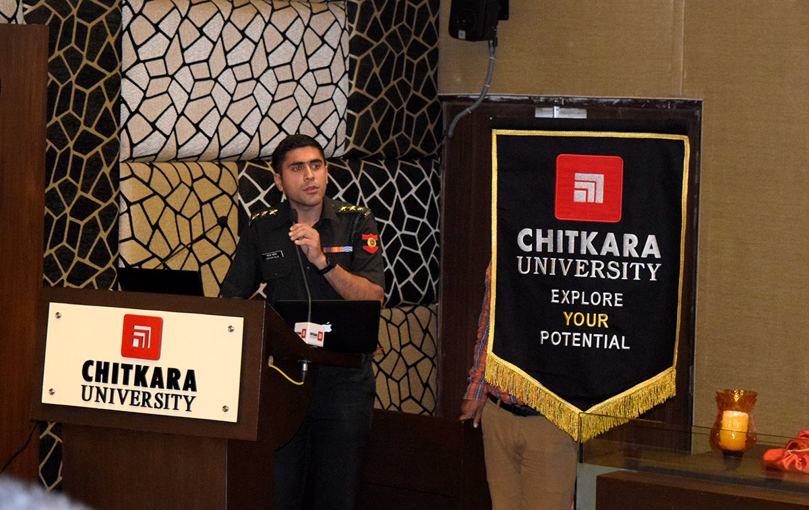
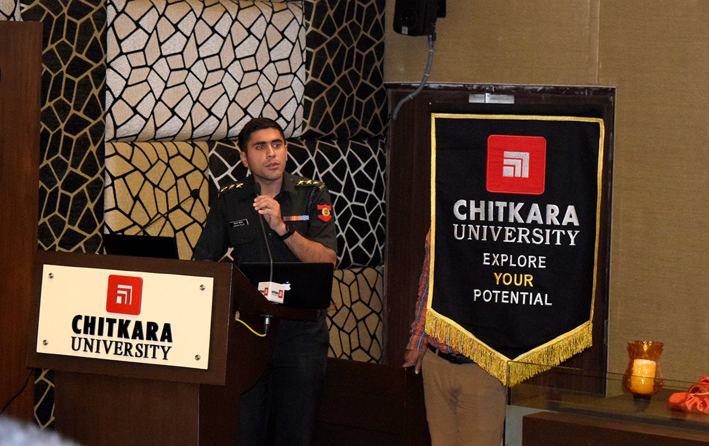

AUDITORIUM
 
UNIVERSITY
Round the year, guest talks, seminars and workshops are organized wherein eminent personalities
from the corporate world and renowned institutions are invited to share real life experiences with
students. A good blend of theory and practice is experienced by students.
Guest lecturers at a college are usually up-and-comers, experts or well-known in their field.
Colleges ask guest speakers to the campus for a variety of reasons. A teacher might invite a successful
alumnus to come to the classroom and speak with students about how they broke into their field.
Guest lecturers need not be limited to campus-based courses. College professors from distance learning and online
courses may also incorporate guest speakers into the curriculum. For example, online professors at Penn State may
invite a guest speaker to hold a weeklong ongoing chat with students. Although the students do not get the opportunity
to hear them speak in person, they still benefit from the interaction.
- Industry Growth & Employability of Engineers by Oak Brook Business School by Mr Sumit.
- Opportunities for Study Abroad in France by Campus of France, Ahmedabad.
- Expert lecture on Industrial Automation by NTTF Mr Subodh Technical Head.
- Workshop on Personality Development & Communication Skills by Expert Edu care.
- IT awareness seminar by Smit Digital Pvt Ltd
- Seminar on Soft Skills areas by TIMES EDUCATION.